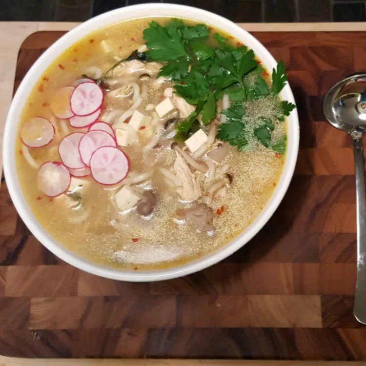

Miso Soup with Shiitake Mushrooms

Description:
A delicious Japanese soup with mushrooms and tofu.
Prep Time: 10 mins
Cook Time: 10 mins
Total Time: 20 mins
Serves: 4
Ingredients
- 1 litre vegetable broth
- 4 shiitake mushrooms, thinly sliced
- 75g miso paste
- 4 teaspoons soy sauce
- 100g diced firm tofu
- 2 green onions, trimmed and thinly sliced
Instructions
- Bring the vegetable broth to a boil in a saucepan. Add the mushrooms, reduce heat to low, and simmer 4 minutes.
- Stir the miso paste and soy sauce together in a small bowl.
- Add to the broth along with the tofu and continue cooking for 1 minute more.
- Pour the soup into bowls and top with the green onions to serve.
Nutritional info (per serving):
- Calories: 92
- Fat: 3g
- Carbs: 12g
- Protein: 6g